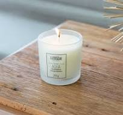

Vela Aromática de Bambu - R$60,00
A vela de bambu tem um aroma mais fresco, leve e revigorante, inspirado na natureza. O cheiro do bambu é frequentemente associado a serenidade, harmonia e equilíbrio, sendo ideal para criar um ambiente calmo e relaxante. O aroma de bambu tem a capacidade de purificar o ar e trazer uma sensação de tranquilidade, tornando-o perfeito para momentos de descanso, meditação ou simplesmente para relaxar após um dia estressante. Além de seu efeito calmante, o bambu é um símbolo de força e flexibilidade. Portanto, as velas aromáticas com esse aroma são uma ótima opção para quem busca criar um espaço de paz e renovação. Elas são especialmente úteis para quartos, salas de estar ou até em spas e ambientes de bem-estar, pois o bambu tem um efeito refrescante e leve que ajuda a criar uma atmosfera mais equilibrada e relaxante.

Vela Aromática de Canela - R$50,00
A vela aromática de canela possui um cheiro quente, doce e envolvente, que é perfeito para criar uma atmosfera acolhedora e reconfortante. O aroma da canela é conhecido por suas propriedades energizantes e estimulantes. Quando acesa, ela ajuda a aquecer o ambiente, criando um clima agradável e até um pouco picante, perfeito para momentos mais íntimos ou durante os meses mais frios do ano. Além do seu poder aromático, a canela tem sido tradicionalmente associada à limpeza de energias negativas, sendo muito utilizada em práticas de bem-estar, meditação e purificação de ambientes. Também é conhecida por estimular a mente, melhorar a concentração e aumentar a sensação de motivação e entusiasmo. Por isso, velas aromáticas de canela são uma excelente escolha para quem busca não só um aroma delicioso, mas também um ambiente energizado e revigorante.
